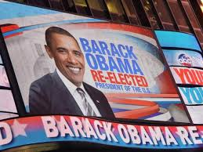

Reeleição de Obama

Obama foi reeleito presidente em novembro de 2012, derrotando o republicano Mitt Romney, e foi empossado para um segundo mandato em 20 de janeiro de 2013. Durante seu segundo mandato, Obama promoveu políticas internas relacionadas com o controle de armas, em resposta ao tiroteio na escola primária de Sandy Hook e outros massacres, e defendeu a igualdade LGBT. No âmbito externo, a fim de conter a ameaça do grupo Estado Islâmico na região do Oriente Médio, ordenou a volta de tropas militares ao Iraque e autorizou ataques aéreos e navais na Síria. Além disso, continuou o plano de encerramento das operações de combate norte-americanas no Afeganistão, promoveu discussões que levaram ao Acordo de Paris de 2015 sobre mudanças climáticas globais, firmou um acordo nuclear com o Irã, e iniciou o processo de normalização das relações entre Cuba e EUA. Ao deixar a presidência, em janeiro de 2017, Obama tinha um índice de aprovação de 60% dentre o povo americano e seu governo também é bem avaliado entre os historiadores e acadêmicos.[1] Ainda, a visão positiva dos Estados Unidos pelo mundo aumentou consideravelmente durante sua administração.